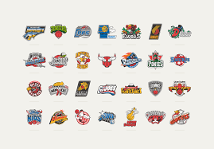
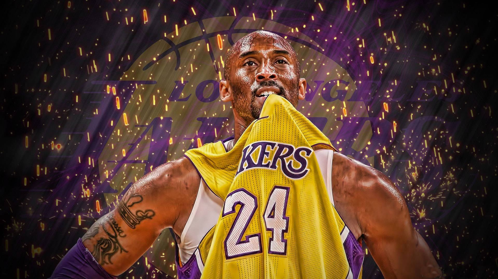

Le saviez vous?
les ballons était comme cela auparavant
fun fact:
Le saviez vous?Magic Johnson a arrêté sa carrière à cause du SIDA
Après avoir mis un terme à sa carrière à la suite de son annonce d'avoir contracté le virus de l'immunodéficience humaine (VIH), il occupe durant une partie de la saison le poste d'entraîneur de sa franchise avant de revenir durant la saison 1995-1996 , mettant un terme définitif à sa carrière à la fin de celle-ci.
voici quelque equipes
On a beaucoup entendu parler de Kobe Bryant. Il est mort avec sa fille de 13 ans, dans un accident d’hélicoptère alors qu’il se rendait au match de basket de sa fille. C’était l’entraîneur de son équipe.
comment obtenir une bague en NBA?
Dans la National Basketball Association (NBA), une bague de championnat est décernée aux membres de l'équipe qui remportent la finale annuelle de la NBA . Les bagues sont remises aux joueurs, aux entraîneurs et aux membres de la direction de l'équipe. Les Boston Celtics ont le plus grand nombre de bagues de l'histoire de la NBA, ayant remporté la finale 18 fois.
combien vaut une bague en NBA?
Le prix de départ était de 94.000 dollars , soit 86.330 euros. Elle a donc trouvé preneur pour 927.000 dollars, soit environ 850.000 euros. En 2021, une personne avait acheté la bague de champion de Bill Russell lors de son premier titre NBA avec les Celtics de Boston datant de 1957 pour près de 700.000 euros.
exemple de quelque exploit dans la NBA
1-connait tu Allain Iverson?
2-Qui est le plus jeune joueur drafté en NBA?
3-Qui est le joueur ayant le plus de bague?
4-Qui est le black momba?